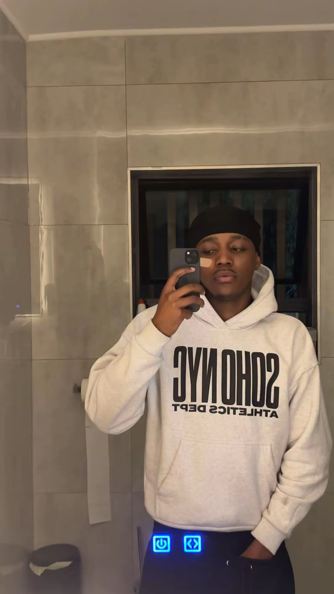

Marcus
Founder & Creative Director
OVRSIZ was born in 2026 out of a frustration with restrictive, fast-fashion silhouettes. We wanted clothes that feel as good to skate in as they do to chill in.

Founder & Creative Director
Explore our latest collection, apply to become a brand ambassador or contact the team.